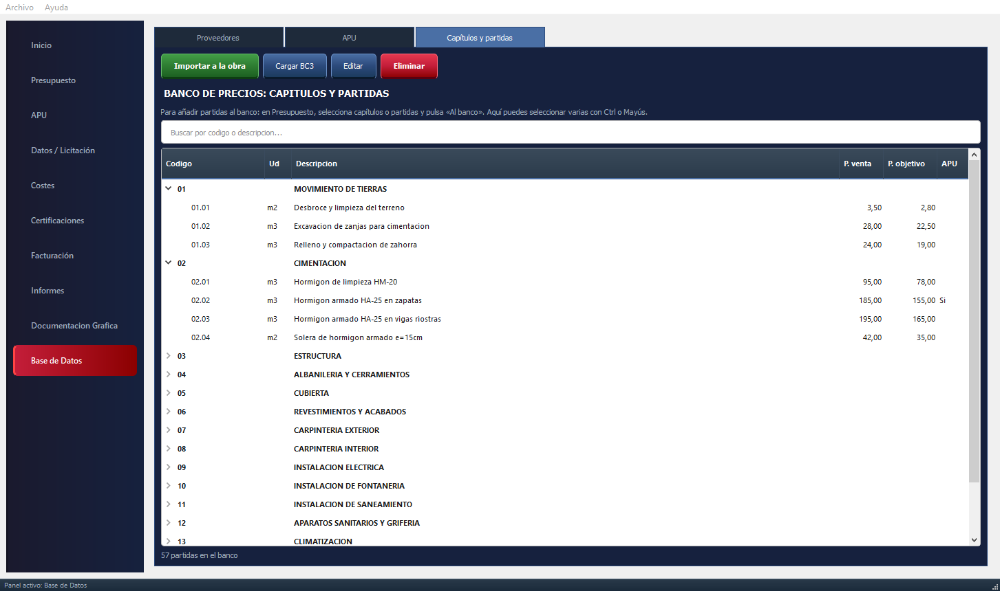
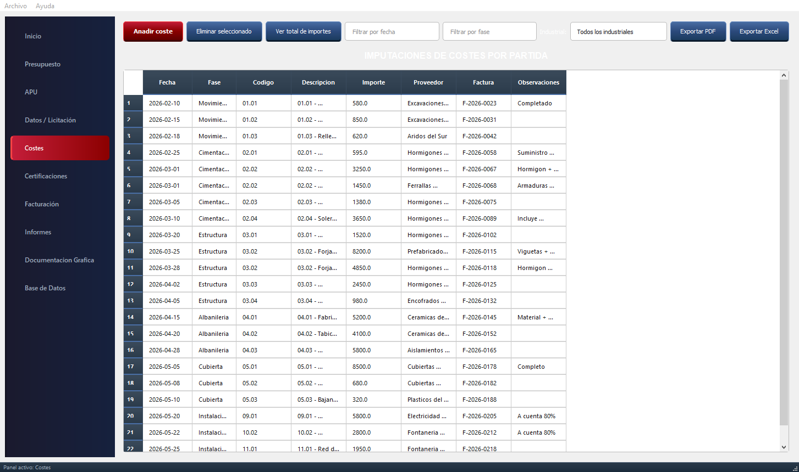
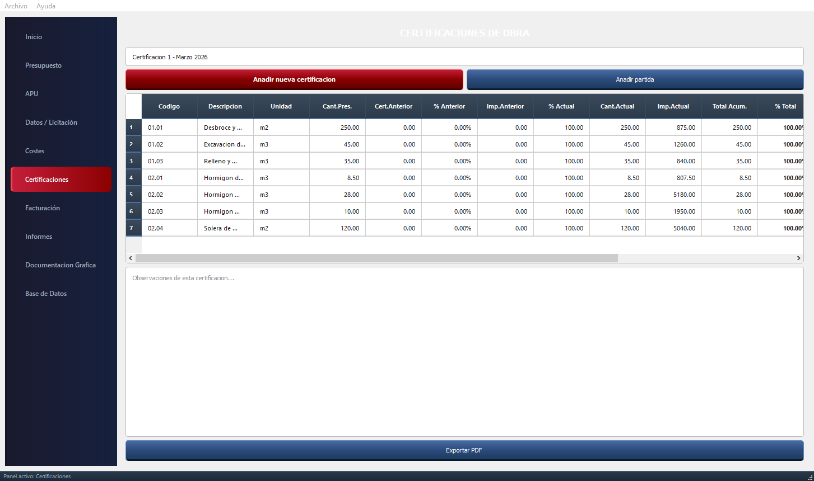

BC3 de entrada y de salida
Abre el presupuesto del proyecto en BC3 con capítulos, partidas, mediciones y descompuestos, y expórtalo cuando lo necesites.
Precio de venta, precio objetivo, precio contratado y coste real de cada partida, en una sola pantalla. Así sabes qué margen te queda antes de que sea tarde para corregirlo.

Cada módulo usa los datos del anterior: no hay que volver a teclear nada.
Al abrir una obra ves lo importante: presupuesto de venta, coste objetivo, coste contratado e imputado, beneficio estimado frente al real y qué parte de la obra queda por contratar.

Capítulos, subcapítulos y partidas con precio de venta, precio objetivo y precio contratado. Los márgenes se calculan solos.
Desglosa cada partida en materiales, mano de obra y maquinaria con sus rendimientos. Guarda capítulos, partidas y descompuestos en tu banco de precios y reutilízalos en la siguiente obra.

Registra cada factura de proveedor contra su partida y fase. Filtra por fecha, fase o industrial y compara al momento con lo previsto.

Relaciones valoradas con lo certificado anterior, lo actual y el total acumulado por partida. Las facturas al cliente salen de las certificaciones, con su anexo en PDF.

Abre el presupuesto del proyecto en BC3 con capítulos, partidas, mediciones y descompuestos, y expórtalo cuando lo necesites.
Importa presupuestos y estados de mediciones en PDF. Antes de crear la obra revisas lo detectado: lo dudoso se marca y nada entra sin tu confirmación.
Agrupa partidas en paquetes por gremio, compara las ofertas de los industriales y adjudica con el precio idóneo a la vista.
Sí. SipleCost importa y exporta el formato estándar BC3 (FIEBDC-3), el que generan la mayoría de programas de presupuestos. También puede importar presupuestos y mediciones en PDF.
No. SipleCost es un programa de escritorio: funciona sin conexión y las obras se guardan en archivos en tu ordenador.
No. Las obras y tu banco de precios se guardan en tu equipo. Tú decides dónde guardarlos y cómo hacer copias de seguridad.
Sí. Pide una demo y te lo enseño con una obra de ejemplo o con una tuya. Las primeras empresas colaboradoras pueden probarlo gratis durante un periodo.
Te lo enseño en una videollamada de 20 minutos. Si encaja con tu forma de trabajar, lo pruebas en tu empresa.
O escríbeme directamente a siplecost@gmail.com